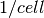

opfm.xtal package¶
Submodules¶
opfm.xtal.kptutils module¶
-
opfm.xtal.kptutils.construct_point_mapping(pts_from, pts_to, tol=2.2204460492503131e-16)¶ Find the index of points from one array in another array
Parameters: pts_from: array_like, shape (npts_from, 3)
pts_to: array_like, shape (npts_to, 3)
Returns: mapping: ndarray
mapping[i] = index of pts_from[i] in pts_to
Raises: Exception
if there is a point in pts_from that does not map to exactly one point in pts_to
-
opfm.xtal.kptutils.create_kmap(k_from, k_to, syms, return_symmetry_index=False)¶ Create a map from one list of k-points to another list
The k-points and symmetries need to be in the same coordinates
-
opfm.xtal.kptutils.find_vector(pt_target, pts_in, idx=None, tol=2.2204460492503131e-16)¶ Find the index of a point in an array of points
Parameters: pt_target: array_like, shape (N,)
point to find
pts_in: array_like, shape (M,N)
array of points in which to find target point
idx: ndarray, optional
precomputed indices, useful for when this function is called many times
tol: float, optional
tolerance for matching the point
-
opfm.xtal.kptutils.find_vector_int(pt_target, pts_in, idx=None)¶ Find the index of a point in an array of points
Parameters: pt_target: array_like, shape (N,)
point to find
pts_in: array_like, shape (M,N)
array of points in which to find target point
idx: ndarray, optional
precomputed indices, useful for when this function is called many times
-
opfm.xtal.kptutils.get_kpq_index(kpoints_int, qpoint_int, grid_dims=None)¶
-
opfm.xtal.kptutils.kgrid(n1, n2, n3, periodic=True, integer=False)¶ Generate a uniform (Gamma centered) grid of k-points in the primitive reciprocal unit cell. The k-points are given in terms of crystal coordinates.
Parameters: n1 : int
number of k-points along
n2 : int
number of k-points along
n3 : int
number of k-points along
periodic : boolean, optional
- True:
DO NOT include redundant boundary points
- False:
Include redundant boundary points, this is useful for interpolation
integer : boolean, optional
kpoints are given in integer form (k1*n1, k2*n2, k3*n3)
Returns: kpoints : ndarray, shape (nkpts=n1*n2*n3, 3)
-
opfm.xtal.kptutils.kmap_2periodic(nk1, nk2, nk3)¶
-
opfm.xtal.kptutils.kmap_grid(grid1, grid2)¶ Map k-points from one regular grid to another
Parameters: grid1 :
coarser grid
grid2 :
finer grid
Returns: idx :
indices of k-points on grid1 inside grid2
-
opfm.xtal.kptutils.kpt_to_unit_cell(kpt, return_gvec=False)¶ Translate k-point to the reciprocal unit cell
The resulting k-point will have fractional coordinates all in [0,1)
-
opfm.xtal.kptutils.print_kpoints(kpoints, stream=<open file '<stdout>', mode 'w'>)¶
-
opfm.xtal.kptutils.read_kpath(fname)¶
-
opfm.xtal.kptutils.reduce(kpoints, syms, return_kweights=False, return_kmap=False)¶
-
opfm.xtal.kptutils.reduce_grid(nk1, nk2, nk3, syms, return_kweights=False, return_kmap=False)¶
-
opfm.xtal.kptutils.subgroup(qpt, syms)¶
-
opfm.xtal.kptutils.to_bz(kpoints, gbz)¶
-
opfm.xtal.kptutils.to_unit_cell(kpoints, return_gvec=False, copy=True)¶
opfm.xtal.utils module¶
-
opfm.xtal.utils.cartesian2crystal(coords, lattice_vectors)¶ Convert vectors expressed in Cartesian coordinates to crystal coordinates
Parameters: coords: ndarray, shape (..., npts, 3)
lattice_vectors: ndarray, shape (3, 3)
Returns: ndarray
-
opfm.xtal.utils.chemical_potential(e, esplit, egap, dos, n, T)¶ Calculate the chemical potential for a given amount of doping
Parameters: e : ndarray
energy grid for the density of states
esplit : float
the energy that separates the electrons from holes (e.g. the midgap energy)
egap : float
energy gap
dos : ndarray
density of states (states/cell/energy)
n : float
doping concentration in , negative for electron doping
T : float
the temperature
-
opfm.xtal.utils.coordinate(lattice_vectors, basis_vectors, coordination_numbers)¶ Coordinate each atom in the basis with a specfic number of neighbors
Parameters: lattice_vectors : array_like, shape (3, 3)
basis_vectors : array_like, shape (natms, 3)
basis vectors in crystal coordinates
coordination_numbers: array_like, shape (natms,)
-
opfm.xtal.utils.crystal2cartesian(coords, lattice_vectors)¶ Convert vectors expressed in crystal coordinates to Cartesian coordinates
Parameters: coords: ndarray, shape (..., npts, 3)
lattice_vectors: ndarray, shape (3, 3)
Returns: ndarray